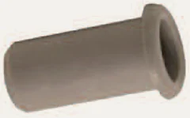

- Armatex
- Push-fit fittings
- QUALPEX liner T66
Pegler Yorkshire · Tec-Tools accessories and tools
QUALPEX liner Tectite T66
QUALPEX liner from the Tec-Tools accessories and tools line: 21 sizes (10mm – 34-35mm). Application: pipe preparation and Tectite installation.
- Sizes
- 21
- Manufacturer
- Pegler Yorkshire

Sizes and article numbers
Source: Tectite 2026 catalogue| Size | Article number | Quantity to quote |
|---|---|---|
| 10mm | 60100 | |
| 15mm | 60103 | |
| 22mm | 60105 | |
| 28mm | 60106 | |
| 15mm | 44917 | |
| 22mm | 44918 | |
| 10mm | 46100 | |
| 12mm | 46101 | |
| 15mm | 46103 | |
| 16mm | 46104 | |
| 18mm | 46105 | |
| 22mm | 46107 | |
| 28mm | 46108 | |
| 10mm | 45970 | |
| 12mm | 45971 | |
| 15mm | 45973 | |
| 16mm | 45974 | |
| 18mm | 45975 | |
| 22mm | 45977 | |
| 28mm | 45978 | |
| 34-35mm | 46145 |
- Line
- Tec-Tools accessories and tools
- Application
- pipe preparation and Tectite installation
Request a quote: QUALPEX liner T66.
Add sizes to the list with the “Add” button or write to us straight away. We will prepare wholesale prices, availability and lead times within one working day.